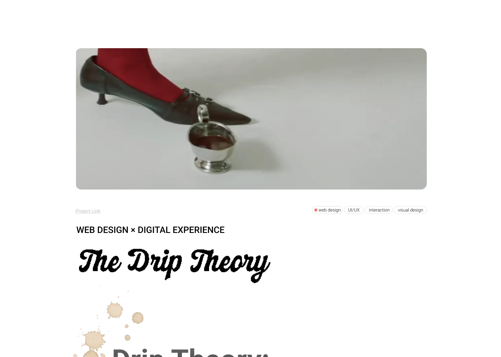
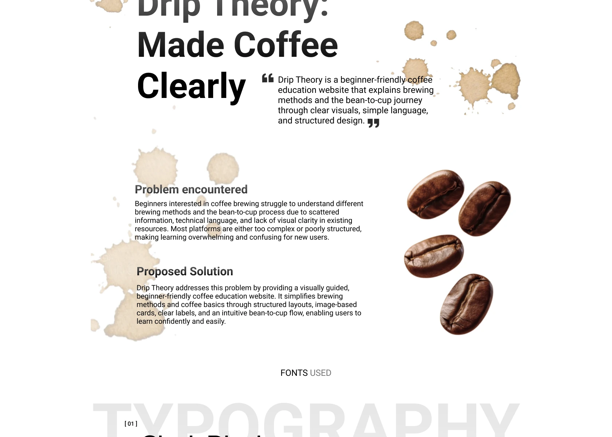
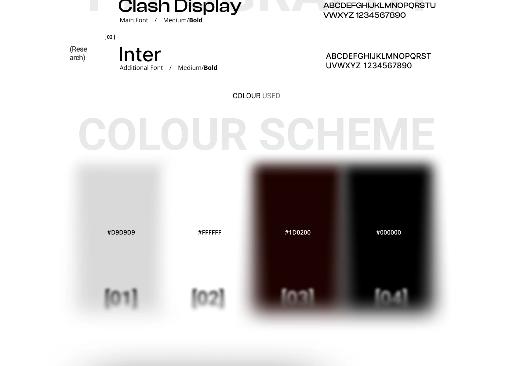
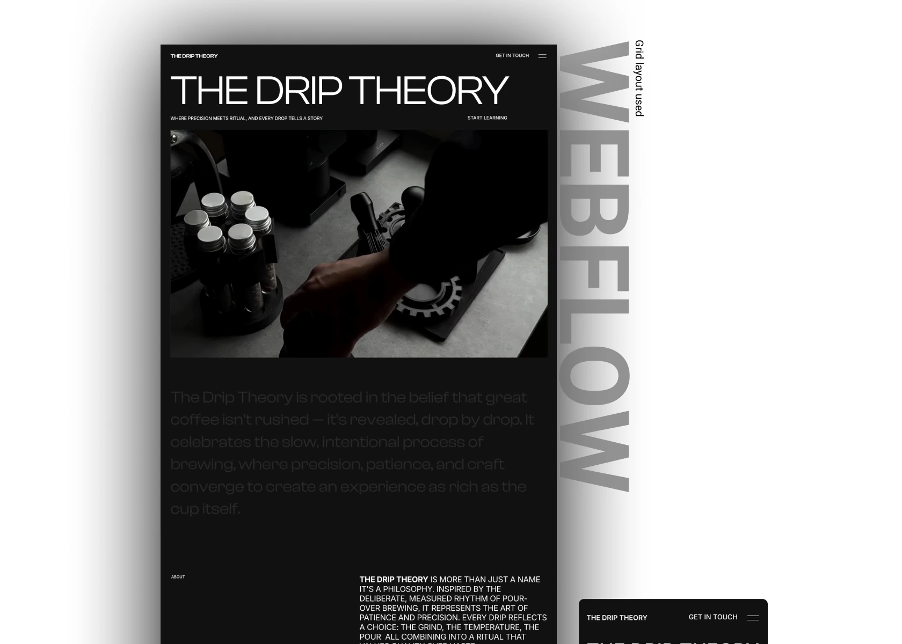
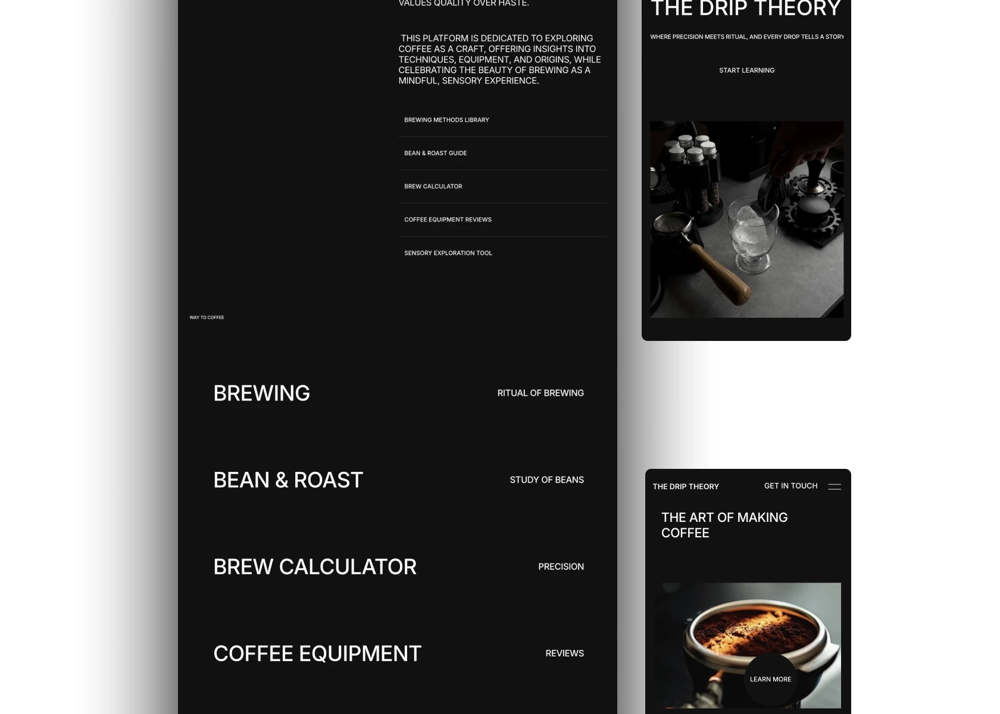
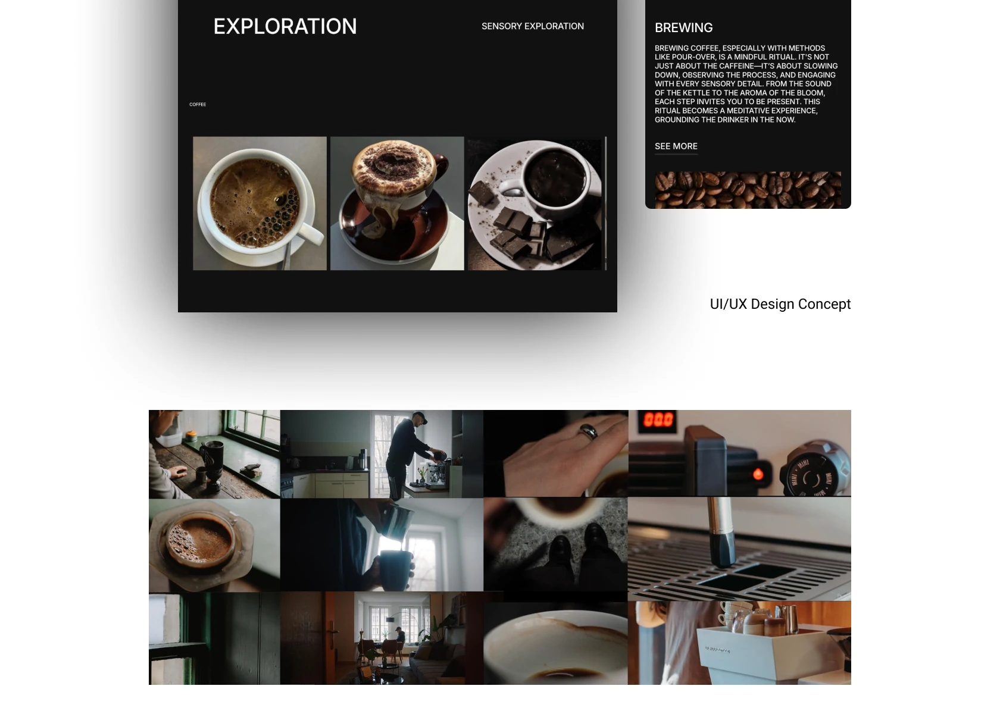

WEB DESIGN × DIGITAL EXPERIENCE
The Drip Theory
web design
UI/UX
interaction
visual design
Drip Theory: Made Coffee Clearly
Drip Theory is a beginner-friendly coffee education website that explains brewing methods and the bean-to-cup journey through clear visuals, simple language, and structured design.
Problem encountered
Proposed Solution
Beginners interested in coffee brewing struggle to understand different brewing methods and the bean-to-cup process due to scattered information, technical language, and lack of visual clarity in existing resources. Most platforms are either too complex or poorly structured, making learning overwhelming and confusing for new users.
Drip Theory addresses this problem by providing a visually guided, beginner-friendly coffee education website. It simplifies brewing methods and coffee basics through structured layouts, image-based cards, clear labels, and an intuitive bean-to-cup flow, enabling users to learn confidently and easily.
COLOUR SCHEME
FONTS USED
COLOUR USED
TYPOGRAPHY
Clash Display
Inter
ABCDEFGHIJKLMNOPQRSTUVWXYZ
[ 01 ]
[ 02 ]
1234567890
Main Font / Medium/Bold
Additional Font / Medium/Bold
[01]
[02]
[03]
[04]
#000000
#1D0200
#FFFFFF
#D9D9D9
WEBFLOW
Grid layout used
UI/UX Design Concept
(Research)